CLAUDE’S PICK
OmniRetrieval: 이질적 지식 소스 통합 검색 프레임워크

기존 RAG 시스템은 모든 지식을 벡터로 변환하여 단일 벡터 공간에 저장하므로 텍스트, 테이블, 지식 그래프 등 구조적으로 다양한 지식 소스의 특성을 손실한다. OmniRetrieval은 자연어 쿼리를 받아 적절한 지식 소스를 식별하고 각 소스의 네이티브 쿼리 언어로 변환하여 원본 실행 엔진에 전달함으로써 각 소스의 구조적 특성을 보존하면서도 통합 검색 인터페이스를 제공한다.
핵심 포인트: 핵심 기여: 텍스트, 관계형 테이블, 그래프 구조 데이터 등 13개 데이터셋과 309개 지식 베이스를 포괄하는 벤치마크에서 단일 소스 기반라인을 초과하는 성능을 달성하며, 스키마와 온톨로지 같은 구조적 장점을 유지하면서 이질적 지식 소스에 대한 범용 검색 인터페이스 제공.
논문 (Papers)
BeliefTrack: 대규모언어모델의 문맥적 신념 관리 벤치마크
장거리 상호작용에서 언어모델이 누적 정보를 언제 업데이트하고 언제 유지할지, 무엇을 무시할지 결정하는 문제를 다룬다. 이 논문은 형식적 증거와 일치하는 신념 상태를 유지하면서 작업 무관한 노이즈를 격리하는 문맥적 신념 관리(CBM) 과제를 정의하고, BeliefTrack이라는 폐쇄형 벤치마크를 제시한다. 강화학습 기반 신념상태 보상을 통해 실패율을 평균 70.9% 감소시키고, 표현 수준 조정으로 46.1% 추가 개선을 달성했다.
핵심 포인트: 핵심 성과: 강화학습 기반 접근으로 Failed Stay, Failed Update, Failed Isolation 오류를 70.9% 감소시켰으며, 표현 수준 조정을 통해 추가로 46.1%의 오류율 감소 달성. BeliefTrack 벤치마크는 Rule Discovery와 Circuit Diagnosis 작업을 통해 정확한 턴 수준의 평가를 가능하게 한다.
논문 (Papers)
Claude Opus 4.8 — 동적 워크플로우로 대규모 코드 분석 가능
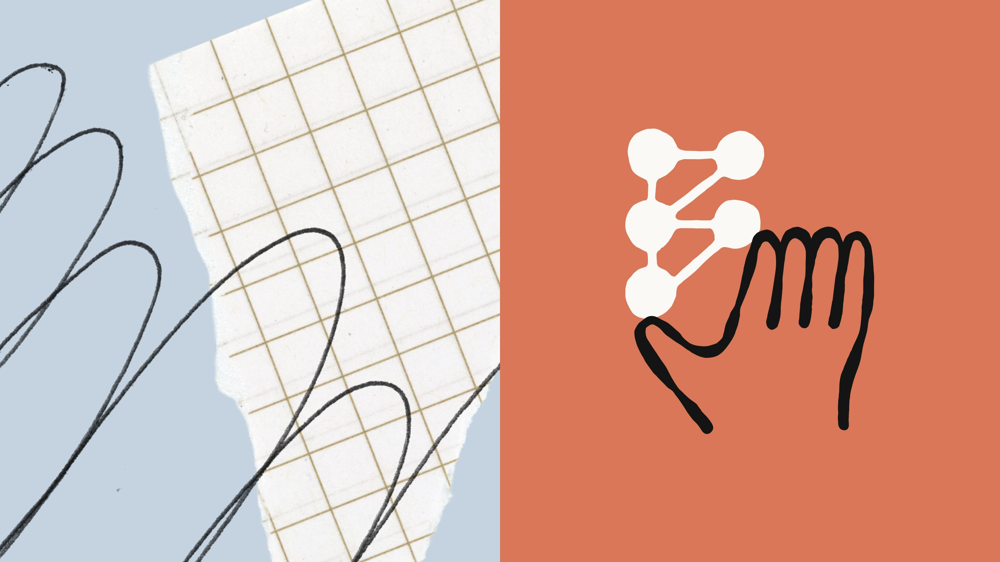
대규모 레거시 마이그레이션이나 코드베이스 전체 분석 시 수십에서 수백 개의 병렬 에이전트를 수동으로 관리해야 하는 문제를 해결한다. Claude Opus 4.8은 동적 워크플로우 기능을 통해 모델이 직접 오케스트레이션 스크립트를 작성하고 다수의 서브에이전트를 자동으로 생성하여 대규모 작업을 역할 분담으로 처리한 뒤 결과를 상호 검증한다. 코딩, 에이전트 작업, 전문 작업 전반에 걸쳐 이전 버전 대비 향상된 성능과 장기 실행 작업 처리 능력을 제공한다.
핵심 포인트: 핵심 성과: 동적 워크플로우로 수십~수백 개 병렬 서브에이전트 자동 오케스트레이션 가능, Super-Agent 벤치마크에서 유일하게 모든 테스트 케이스 완료, Fast Mode는 이전 모델 대비 3배 저렴한 비용으로 2.5배 빠른 속도 제공.
🔗 anthropic.com/news/claude-opus-4-8
기타 (Others)
AI & RESEARCH
COSMO-Agent: CAD-CAE 의미론적 격차를 메우는 폐루프 최적화 에이전트


산업 설계 최적화에서 시뮬레이션 피드백을 유효한 기하학적 편집으로 변환하는 CAD-CAE 의미론적 격차가 병목 현상을 야기한다. 이를 해결하기 위해 COSMO-Agent는 강화학습 기반 도구 증강 에이전트 프레임워크를 제안한다. LLM이 CAD 생성, CAE 계산, 결과 파싱, 기하학 수정을 반복적으로 오케스트레이션하면서 복합 제약 조건을 만족할 때까지 매개변수 기하학을 개선한다. 산업 맞춤형 데이터셋과 다중 제약 보상 설계로 학습 안정성과 실용성을 확보했다.
핵심 포인트: 핵심 기여: 25개 컴포넌트 카테고리의 산업 맞춤형 CAD-CAE 실행 데이터셋 제공 및 COSMO-Agent 훈련으로 소규모 오픈소스 LLM이 대규모 클로즈드소스 모델을 실행 가능성, 효율성, 안정성 측면에서 초과.
논문 (Papers)
ERM: RAG 시스템의 지속적 학습을 위한 진화형 검색 메모리
기존 RAG 시스템은 쿼리 확장과 반복 검색으로 견고성을 개선하지만 각 쿼리마다 재계산하는 비효율성을 갖고 있다. ERM은 훈련 없이 일시적인 쿼리 시간 개선을 지속적인 검색 개선으로 변환하는 프레임워크로, 정확성 기반 피드백으로 인덱스를 업데이트하고 원자적 확장 신호를 문서 키에 선택적으로 할당한 후 안정적인 업데이트로 키를 점진적으로 진화시킨다. 쿼리와 키 확장의 이론적 동등성을 증명하고 추론 시간 오버헤드 없이 최적 쿼리 확장을 안정적 인덱스에 고정시킨다.
핵심 포인트: 핵심 성과: BEIR와 BRIGHT 벤치마크의 13개 도메인에서 일관된 검색 및 생성 성능 향상을 달성했으며, 특히 추론 집약적 작업에서 우수한 성과를 보이면서 기본 검색 속도를 유지한다.
논문 (Papers)
Xetrieval: 밀집 검색의 메커니즘 해석 프레임워크
밀집 검색기가 높은 관련성 점수를 할당하는 이유를 설명하기 어려운 문제를 해결하는 임베딩 수준의 메커니즘 해석 프레임워크. 체인-오브-소트 추론을 임베딩 공간에 직접 근사화하여 추론 지향 정보로 문장 임베딩을 강화한 후, 이를 인간이 해석 가능한 희소 특성으로 분해하여 개별 검색 결정에 대한 특성 수준의 설명을 제공한다.
핵심 포인트: 핵심 기여: 임베딩 수준에서 일관된 해석 가능 특성을 발굴하고, 쌍 수준 개입 효과를 강화하며, 작업 수준 특성 조종을 지원하는 경량 프레임워크 제시.
논문 (Papers)
Kapa.ai: 기술 문서의 이미지를 RAG 파이프라인에 효율적으로 인덱싱하는 방법
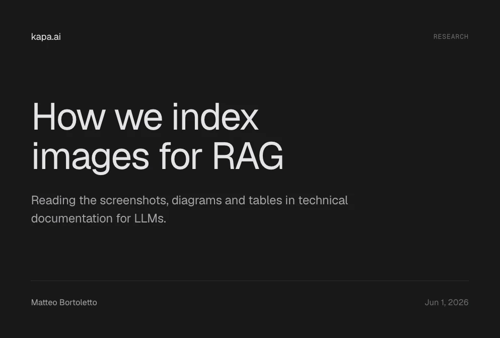
기술 문서에 포함된 수백만 개의 스크린샷, 다이어그램, 표를 LLM 검색 증강 생성 시스템에 활용할 때 발생하는 효율성 문제를 해결한다. 저비용 비전 모델로 인덱싱 단계에서 이미지를 텍스트 설명으로 변환하여 저장하고, 쿼리 시점에는 이미지를 전송하지 않는 방식을 통해 쿼리당 오버헤드를 1~6%로 제한하면서도 답변 품질을 통계적으로 유의미하게 개선한다.
핵심 포인트: 핵심 성과: 이미지 컨텍스트 활용 시 LLM 판정자의 답변 선호도가 측정 가능하게 향상되며, 인덱싱은 일회성 비용이므로 반복 쿼리에서 추가 오버헤드가 최소화된다.
🔗 kapa.ai/blog/how-we-index-images-for-rag
기타 (Others)
Gemma 4 12B — 구글의 통합 멀티모달 경량 AI 모델 공개
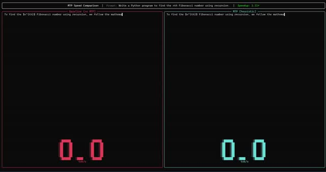
클라우드 의존도가 높은 AI 활용의 한계를 해결하기 위해 구글이 Gemma 4 12B를 출시했다. 텍스트, 이미지, 오디오를 별도 인코더 없이 하나의 통합 아키텍처에서 처리하며, 16GB 노트북에서도 구동 가능한 경량 설계를 실현했다. Apache 2.0 라이선스로 공개되어 기업과 개발자가 자유롭게 활용할 수 있으며, 로컬 어텐션과 글로벌 어텐션의 교차 배치, GQA 기법 적용으로 메모리 효율성을 극대화했다.
핵심 포인트: 핵심 성과: 31B 모델이 LM Arena 글로벌 리더보드 3위 달성(자신보다 20배 이상 큰 모델 능가), 26B MoE는 128개 전문가 중 8개만 활성화하여 38억 파라미터로 31B에 근접한 성능 제공, E2B(20억 파라미터)는 RAM 1~2GB에서 함수 호출 및 추론 에이전트 구현 가능.
🔗 blog.google/innovation-and-ai/technology…
블로그 (Blog)
Production-Agentic-RAG-Course: 프로덕션급 검색증강 생성 시스템 구축 코스
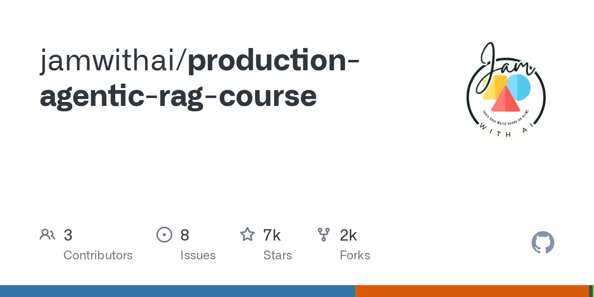
대부분의 RAG 코스가 벡터 데이터베이스부터 시작하는 것과 달리, 이 코스는 BM25 키워드 검색을 먼저 구현한 후 하이브리드 검색으로 진행하는 실무 중심 교육이다. 프로덕션 환경에서 벡터만으로는 정밀도가 떨어지는 문제를 해결하기 위해 7주에 걸쳐 Airflow 자동 수집, OpenSearch BM25, RRF 하이브리드 검색, 로컬 LLM, Redis 캐시, LangGraph 에이전트를 통합한 완전한 arXiv 논문 수집 및 검색 시스템을 구축한다.
핵심 포인트: 핵심 성과: RAM 8GB, 디스크 20GB로 시작 가능하며 Redis 캐시로 최대 400배 속도 향상, Docker Compose 한 줄로 전체 시스템 배포 가능한 프로덕션 레벨 RAG 시스템 구현
🔗 github.com/jamwithai/production-agentic-r…
GitHub
Surya: 90개 언어 지원하는 문서 OCR 및 레이아웃 분석 모델
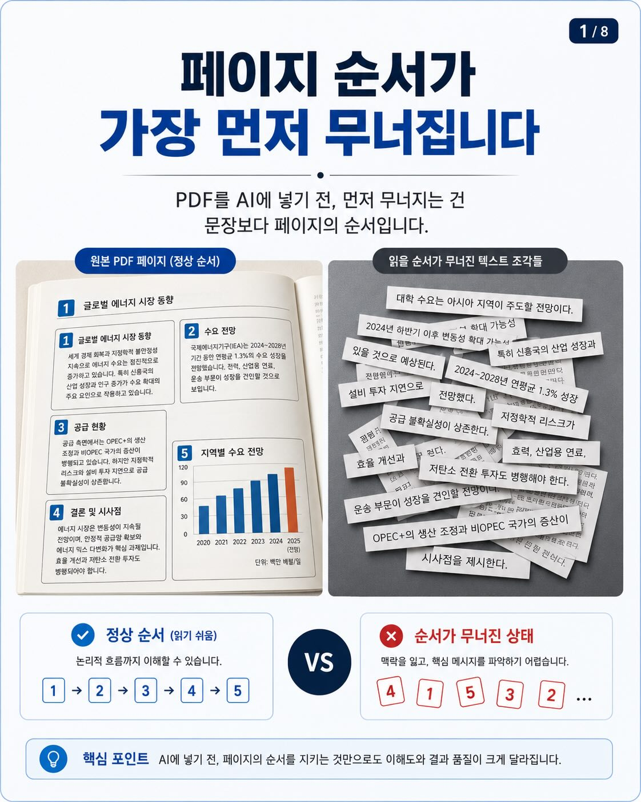
PDF와 스캔 이미지에서 단순 텍스트뿐 아니라 제목, 표, 수식, 그림 등 문서의 구조적 정보를 함께 추출해야 하는 필요성이 있다. Surya는 650M 파라미터 규모의 OCR 모델로 텍스트 감지, 레이아웃 분석, 읽기 순서, 표 인식, LaTeX OCR 기능을 제공하며 결과를 JSON이나 HTML 형식으로 반환한다. 이를 통해 RAG 파이프라인, 사내 문서 검색, 논문 파싱 등에서 구조화된 정보 추출을 실현한다.
핵심 포인트: 핵심 성과: olmOCR-bench에서 3B 파라미터 이하 모델 중 최고 수준의 83.3% 정확도 달성, RTX 5090에서 초당 5페이지 처리, 91개 언어에 대해 87.2% 성능 기록
GitHub
DeepLearning.AI: LLM 애플리케이션 레드 티밍 완벽 가이드
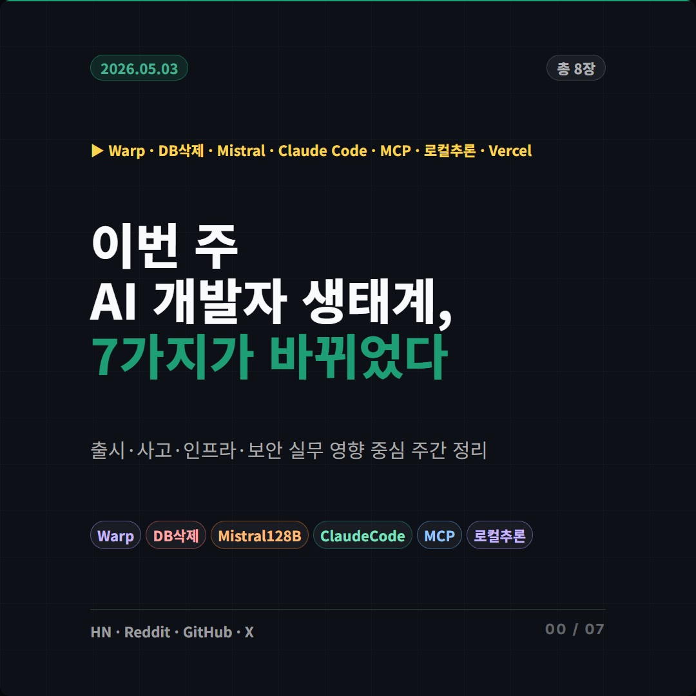
LLM 서비스 배포 시 프롬프트 인젝션, 탈옥 등 보안 취약점으로 인한 서비스 신뢰도 붕괴 문제를 해결하기 위한 레드 티밍 교육 과정. DeepLearning.AI, Microsoft, Hugging Face 등 빅테크 전문가들이 정리한 체계적인 레드 티밍 방법론과 오픈소스 도구(Giskard)를 활용한 자동화된 취약점 검증 기법을 제공한다.
핵심 포인트: 핵심 기여: 사이버보안 레드 티밍 기법을 LLM 안전성 검증에 적용한 실무 가이드 제공 및 Giskard 라이브러리를 통한 LLM 레드 티밍 자동화 방법론 제시.
🔗 deeplearning.ai/courses/red-teaming-llm-a…
기타 (Others)
AutoTTS: LLM 추론 시점 전략을 자동 발견하는 프레임워크
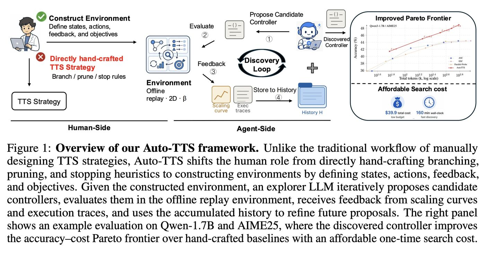
LLM의 추론 시점 확장(TTS) 전략을 사람이 수작업으로 설계하는 기존 방식의 한계를 극복하는 프레임워크. AutoTTS는 연구자 역할을 직접 전략 설계에서 발견 환경 설계로 전환하여, LLM 에이전트가 오프라인 재생 환경에서 후보 컨트롤러를 반복 제안하고 평가받도록 한다. 베타 파라미터화와 실행 궤적 피드백을 통해 과적합을 방지하고 효율적 탐색을 실현한 결과, 기존 수작업 전략 대비 정확도 대비 비용 효율이 우수한 컨트롤러가 39.9달러, 160분의 저비용으로 자동 발견되었다.
핵심 포인트: 핵심 성과: 발견된 Confidence Momentum Controller는 SC@64 대비 토큰 소비를 69.5% 절감하면서 동등한 정확도 달성, AIME25, HMMT25, GPQA-Diamond 등 미사용 벤치마크 및 DeepSeek-R1 모델에도 일반화되어 TTS 연구의 패러다임 전환을 시사한다.
🔗 wikidocs.net/blog/@jaehong/13653/
기타 (Others)
Hermes Agent — AI 에이전트 컨텍스트 오버플로우 문제를 해결하는 Tool Search
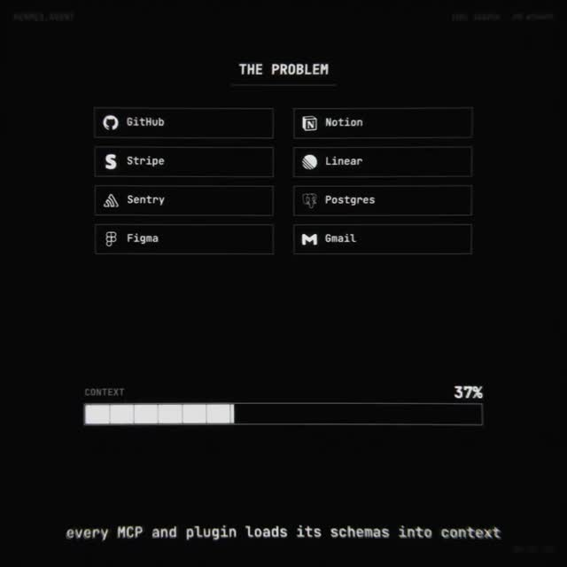
AI 에이전트에 MCP 서버와 플러그인을 추가할 때 도구 스키마가 컨텍스트 창을 과도하게 차지하는 문제가 발생한다. Nous Research의 Hermes Agent는 Tool Search 기능으로 이를 해결하며, 수많은 도구를 모두 로드하는 대신 검색, 서술, 호출 3개의 브릿지 도구만 로드한 후 사용자 질문에 맞춰 필요한 도구 스키마를 온디맨드로 불러온다. 컨텍스트 10% 이상을 도구 스키마가 차지할 때만 자동 활성화되어 불필요한 오버헤드를 줄인다.
핵심 포인트: 핵심 기여: 도구 카탈로그를 인덱스 형태로 다루는 구조적 변화로 컨텍스트 효율성을 극대화하고, 장기 작업 수행 시 에이전트 성능을 향상시킨다.
🔗 hermes-agent.nousresearch.com/docs/user-g…
기타 (Others)
Claude Code v2.1.142-143 — 프롬프트 캐싱 최소 토큰 기준 반으로 단축
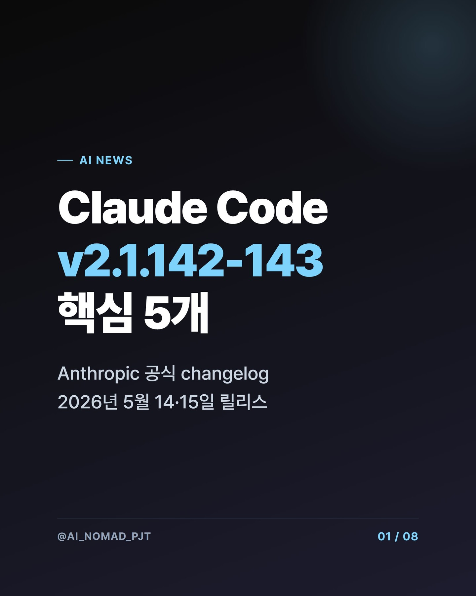
Claude Opus 4.8에서 프롬프트 캐싱 기능이 대폭 개선됐다. 기존에는 대화 중간에 시스템 지시문을 변경하면 기존 캐시가 완전히 초기화돼 비용과 지연 시간이 급증하는 문제가 있었다. 이번 업데이트로 시스템 지시문 변경 후에도 기존 캐시가 유지되며, 자동 캐싱 적용 기준이 2,000토큰에서 1,024토큰으로 낮춰졌다. 이를 통해 중간 길이의 API 호출들도 코드 수정 없이 자동으로 90% 비용 할인을 받을 수 있게 된다.
핵심 포인트: 핵심 성과: 프롬프트 캐싱 최소 토큰 기준이 2,000에서 1,024로 50% 단축되어 API 호출 비용 90% 절감 가능. 멀티턴 에이전트에서 시스템 프롬프트 변경 시에도 기존 캐시 유지로 성능 저하 문제 아키텍처 레벨에서 해결.
🔗 threads.com/@choi.openai/post/DY87UWJAltM…
기타 (Others)
AutoScientists — 자율 협업하는 AI 연구팀 시스템
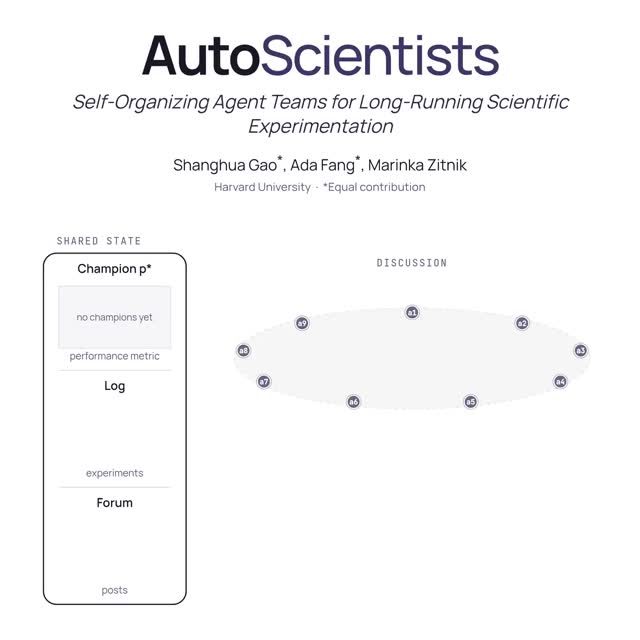
기존 AI 연구 에이전트는 중앙 관리자의 통제 아래 단일 흐름으로 작업하거나 고정된 역할 분담 구조를 따르므로, 장시간 병렬 탐색과 동적 방향 전환에 어려움을 겪는다. Harvard 연구진의 AutoScientists는 중앙 통제자 없이 여러 AI 에이전트가 공유 상태를 독립적으로 해석하고, 실험 결과를 공유하며, 서로의 아이디어를 검토하고, 유망한 연구 방향에 자연스럽게 팀을 구성하는 방식으로 이를 해결한다. GPT 학습 최적화에서 기존 AutoResearch보다 1.9배 빠르고, 생명과학 과제와 단백질 설계 벤치마크에서도 우수한 성능을 달성했다.
핵심 포인트: 핵심 성과: GPT 학습 최적화에서 같은 성능 도달까지 1.9배 단축, BioML-Bench 24개 과제에서 기존 대비 높은 성능, ProteinGym 벤치마크에서 기존 최고 성능(Kermut) 초과 달성.
🔗 autoscientists.openscientist.ai/
기타 (Others)
Claude Opus 4.8 — 코딩 성능 우수하나 실무 평가는 엇갈려
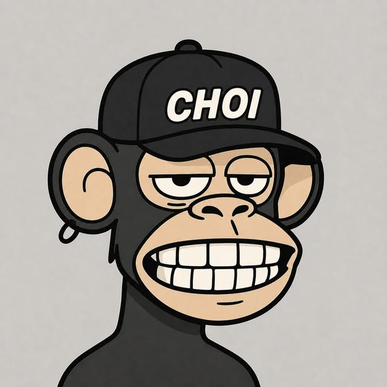
Claude Opus 4.8 출시 후 공식 벤치마크와 외부 평가 결과가 상이한 양상을 보이고 있다. FrontierSWE와 APEX-SWE에서는 고난도 코딩 및 디버깅 작업에서 강한 성능을 보였으나, CursorBench에서는 이전 세대인 Opus 4.7 Max를 넘기지 못했다. CodeRabbit의 코드 리뷰 평가와 Andon Labs의 비즈니스 테스트에서는 기대에 미치지 못하는 결과를 기록했다. 종합 분석 결과 Opus 4.8은 주어진 규칙을 충실히 따르며 긴 작업을 안정적으로 수행하는 특성을 보인다.
핵심 포인트: 핵심 성과: FrontierSWE에서 평균 순위 2.74, dominance 83%를 기록하며 GPT-4.5 Codex를 상회했으나, 모든 세부 항목에서 완전한 성능 우위를 확보하지 못함.
🔗 threads.com/@choi.openai/post/DY8IVuMk3fB…
기타 (Others)
Claude Opus 4.8 — 정확한 지시 실행으로 프롬프트 전략 전환 필요
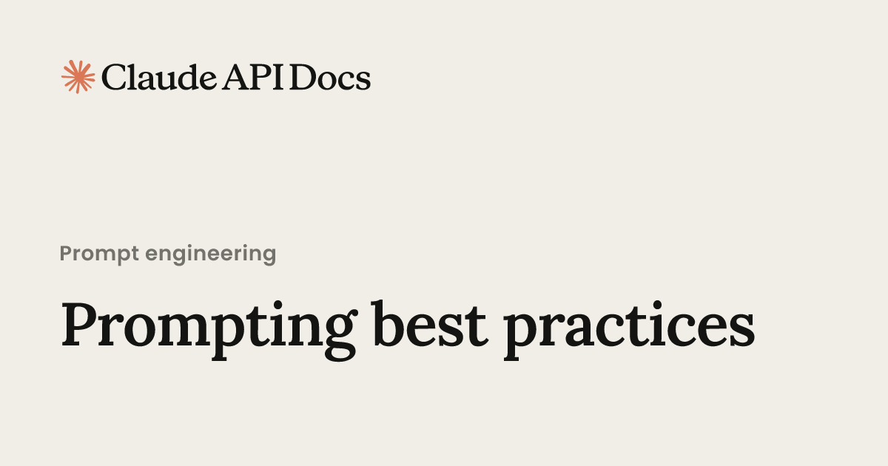
Claude Opus 4.8은 이전 모델보다 지시를 더 정확히 따르는 특성이 있어, 기존 프롬프트를 그대로 사용하면 성능이 떨어져 보이는 문제가 발생한다. 모델의 퇴보가 아닌 동작 방식의 변화로, 사용자가 범위를 명시적으로 지정하고 단계를 분리하며 모호한 표현을 구체화해야 한다. Anthropic의 가이드는 이러한 변화에 맞춰 프롬프트 엔지니어링 방식을 전환할 것을 권장하며, 결과적으로 더 예측 가능하고 안정적인 결과를 얻을 수 있다.
핵심 포인트: 핵심 기여: Claude Opus 4.8은 글자 그대로의 지시 실행으로 프롬프트 전략 변화 필요. 명시적 범위 지정, 단계 분리, 구체적 기준 수치화를 통해 이전 모델 대비 더 안정적이고 예측 가능한 결과 달성 가능.
🔗 platform.claude.com/docs/en/build-with-cl…
기타 (Others)
Claude Code — 병렬 에이전트 기반 초대형 프로젝트 자동화
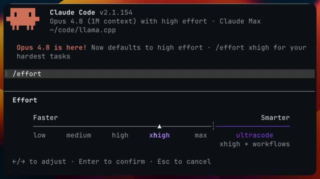
대규모 코드베이스 마이그레이션이나 서비스 전체 버그 헌팅 같은 복잡한 개발 작업을 수작업으로 처리할 때 시간과 인력이 과도하게 소모되는 문제를 해결하기 위해 Anthropic이 Claude Code에 ultracode 모드를 추가했다. 이 모드에서 Claude는 필요에 따라 동적 워크플로우를 자동으로 생성하고 수십~수백 개의 병렬 서브에이전트를 띄워 역할을 분담하여 대규모 프로젝트를 동시에 처리할 수 있다.
핵심 포인트: 핵심 성과: 100개 이상의 에이전트를 동시 실행하여 프로젝트 전체를 수정하는 실사례가 등장했으며, 작은 개발 조직 규모의 병렬 작업 처리 능력을 AI가 갖추기 시작했다.
🔗 threads.com/@choi.openai/post/DY5fjBhCpDa…
기타 (Others)
Claude Dynamic Workflows — 수백 개 서브에이전트 병렬 실행
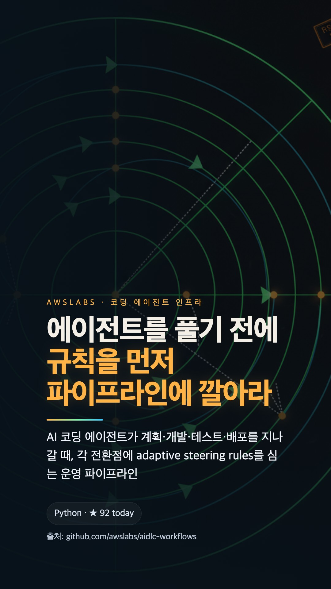
복잡한 작업을 단일 에이전트가 순차적으로 처리할 때의 비효율을 해결하기 위해 Claude가 동적 워크플로우를 도입했다. 사용자 요청에 따라 실시간으로 계획을 수립하고 작업을 수십에서 수백 개의 서브태스크로 분해한 후 여러 보조 에이전트가 병렬로 처리하도록 오케스트레이션한다. 최종 결과 제출 전 검증 단계를 거쳐 정확성을 보장하며, 분기 단위 작업을 며칠 내에 완료할 수 있다.
핵심 포인트: 핵심 성과: 단일 세션에서 수십에서 수백 개의 병렬 서브에이전트 동시 실행으로 복잡한 코드베이스 버그 추적, 대규모 파일 마이그레이션, 다각도 계획 검증을 end-to-end로 처리 가능.
🔗 claude.com/blog/introducing-dynamic-workf…
기타 (Others)
DEVTOOLS & OPEN SOURCE
Hermes Desktop — Nous Research의 AI 에이전트 공식 데스크톱 앱 출시
기존에 터미널, 디스코드, 텔레그램 등 다양한 플랫폼을 통해서만 사용 가능했던 Hermes Agent를 이제 윈도우, 맥, 리눅스의 네이티브 데스크톱 앱으로 사용할 수 있게 되었다. 기존 에이전트의 메모리와 설정을 동기화하며, 원격 서버에 구축한 Hermes Agent와도 연결 가능하다. 자동 스킬 생성, 자연어 스케줄링, 멀티 백엔드 지원 등 에이전트 기능을 통합 환경에서 활용할 수 있다.
핵심 포인트: 핵심 기여: 텔레그램, 디스코드, 슬랙, 이메일, CLI 등 다중 플랫폼에서 단일 메모리와 설정으로 동작하며, 로컬, 도커, SSH, 싱귤래리티, 모달 등 5가지 백엔드를 지원하고 컨테이너 격리를 통한 보안을 제공한다.
🔗 threads.com/@choi.openai/post/DZHQw09jfYD…
기타 (Others)
Claude Code — AI가 스스로 멀티에이전트 워크플로우를 동적 설계
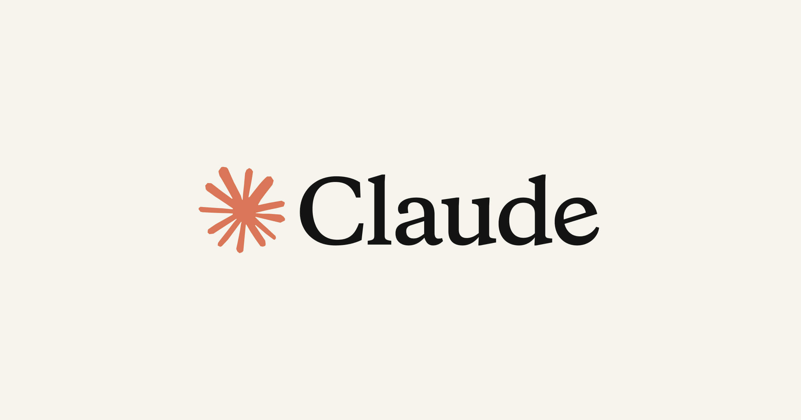
복잡한 작업을 AI에게 맡길 때 발생하는 성능 저하와 품질 문제를 해결하기 위해 Anthropic이 Claude Code에 도입한 동적 워크플로우 기능. Claude가 작업 특성에 맞춰 자바스크립트 기반의 커스텀 하네스를 직접 작성하고, 여러 서브에이전트를 생성해 협업하도록 조율한다. 이를 통해 채용, 사업 검토, 디버깅 등 다양한 분야에서 프로젝트 매니저처럼 작업 방식을 자동으로 설계하고 실행할 수 있다.
핵심 포인트: 핵심 기여: 작업 특성별 맞춤 하네스를 Claude가 즉시 생성하고, 격리된 작업 공간에서 멀티에이전트 협업을 오케스트레이션하며, 세션 중단 후에도 이전 지점부터 재개 가능한 상태 유지 기능 제공
🔗 claude.com/blog/a-harness-for-every-task…
기타 (Others)
Headroom — AI 에이전트 토큰 소비량 최대 95% 압축
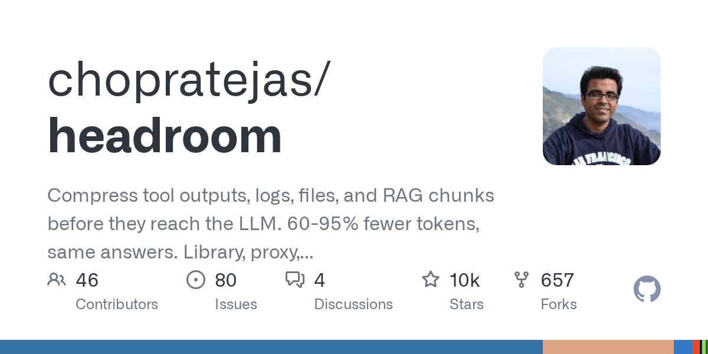
AI 에이전트가 RAG 결과, 시스템 로그, 코드 베이스를 처리할 때 과도한 토큰을 소비하는 문제를 해결하는 오픈소스 컨텍스트 압축 레이어. CCR 메커니즘을 통해 JSON, 소스코드, 시스템 로그를 로컬에 저장하고 모델에는 압축된 구조화 데이터와 검색 툴만 제공하여, 필요시에만 원본 정보를 호출하는 방식으로 정보 손실 없이 입력 토큰을 물리적으로 감소시킨다.
핵심 포인트: 핵심 성과: 토큰 소비량 60~95% 감소 달성, 기존 소스코드 수정 없이 리버스 프록시 형태로 배포 가능하며 LLM 엔드포인트만 변경하면 즉시 연동 가능
🔗 github.com/chopratejas/headroom
GitHub
LangSmith on AWS — LLM 에이전트 평가와 디버깅 프레임워크
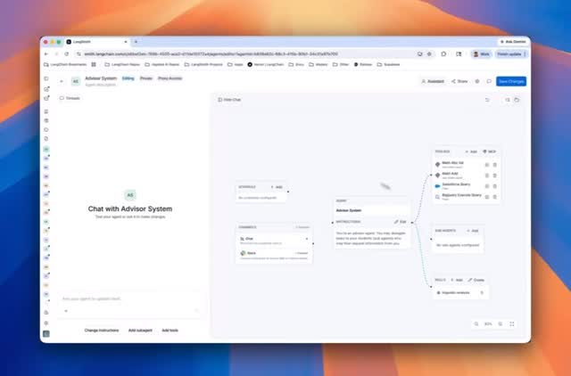
LLM 에이전트의 비결정적 다단계 실행에서 조기 오류가 후속 결과에 미치는 영향으로 인해 프로덕션 검증이 어려운 문제를 해결한다. AWS와 LangChain이 협력하여 LangGraph 기반 딥 에이전트를 LangSmith로 오프라인 및 온라인 검증하는 실무적 아키텍처를 제시한다. 다섯 가지 평가 전략을 통해 멀티턴 및 복잡한 장기 태스크 수행 시 에이전트 신뢰성을 추적하고 지속적으로 개선할 수 있는 평가 프레임워크를 제공한다.
핵심 포인트: 핵심 기여: LangChain의 딥 에이전트 평가 학습과 Anthropic의 AI 에이전트 평가 가이드를 결합하여 단일 도구 호출 오류로 인한 워크플로우 전체 영향을 조기에 탐지하고 프로덕션 단계에서 지속적 신뢰성 향상을 가능하게 한다.
🔗 aws.amazon.com/ko/blogs/machine-learning…
기타 (Others)
Claude Code Security Guidance — AI 코드 생성의 보안 위험을 실시간으로 검사
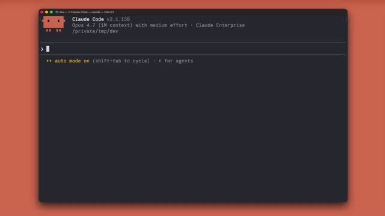
AI 코드 생성이 보편화되면서 보안 취약점 노출 위험이 증가하고 있다. Anthropic이 제공하는 무료 플러그인 Security Guidance는 Claude Code가 생성한 코드를 실시간으로 검사하여 비밀번호 하드코딩, 명령어 주입, XSS 등 25개의 위험 패턴을 감지하고 자동으로 수정한다. 파일 편집 단계, AI 작업 완료 단계, 커밋 단계의 3단계 검사 구조로 설계되어 보안 전문가 수준의 취약점을 사전에 차단한다.
핵심 포인트: 핵심 성과: 모든 Claude Code 플랜에서 무료로 사용 가능하며, 별도 설정 없이 자동 작동하는 배경 검사로 약 25개의 일반적 보안 패턴을 실시간 감지 및 자동 수정
🔗 threads.com/@eddiemoon0720/post/DY4C-oeD6…
기타 (Others)
ENGINEERING
Claude Code Harness — 멀티 에이전트 오케스트레이션 시스템 아키텍처
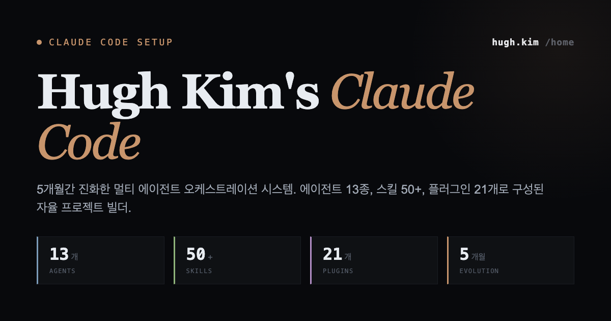
Claude Code를 학습하는 개발자들이 복잡한 AI 에이전트 구축 개념을 이해하기 어려워하는 문제를 해결하기 위해 Hugh Kim이 공개한 해체 강연. 5개월간 진화한 멀티 에이전트 오케스트레이션 시스템으로, 13종의 에이전트, 50개 이상의 스킬, 21개의 플러그인으로 구성된 자율 프로젝트 빌더를 구현했다. Claude Code harness를 Codex/OMX로 이식하고 31개의 HARD hooks를 통한 견고한 아키텍처로 설계하여 실무적 AI 운영체제 구축 방법론을 제시한다.
핵심 포인트: 핵심 기여: 13종 에이전트와 50+ 스킬로 구성된 멀티 에이전트 오케스트레이션 시스템 공개, 31개 HARD hooks 기반의 표준화된 harness 아키텍처 제시, 프로젝트 고유 패턴 학습을 위한 9-Phase init-project 분석 파이프라인 구현.
기타 (Others)
PRODUCT & INDUSTRY
Claude 메모리 시스템: 협업 효율을 위한 세션 관리와 개인화
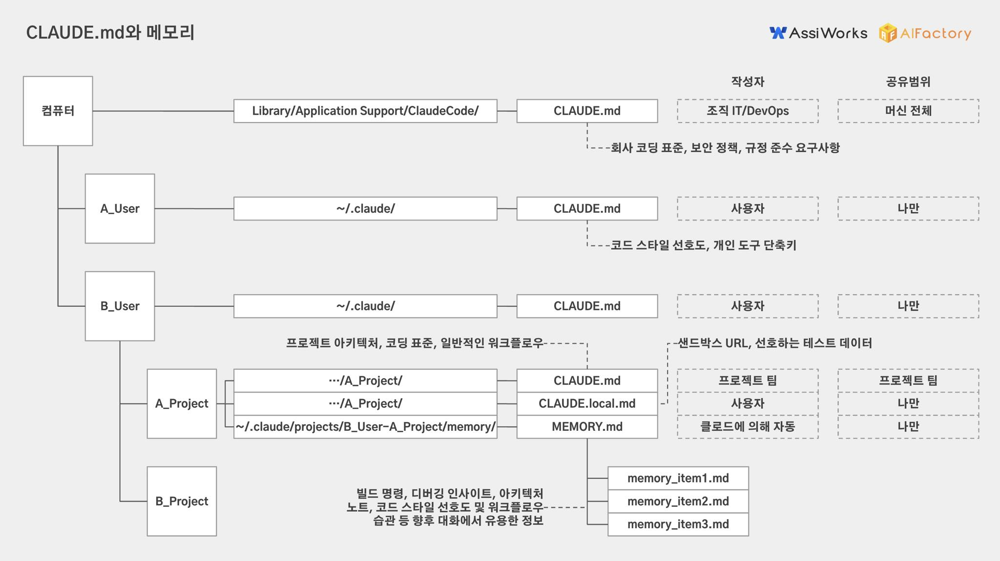
Claude와의 협업에서 세션 간 문맥 단절 문제를 CLAUDE.md 메모리 파일과 프로젝트 지침으로 해결한다. 사용자는 지침으로 저장된 작업 가이드라인을 매번 반복 설명 없이 적용받으며, 메모리와 대화 기록을 통해 다른 세션에서도 일관된 개인화 답변을 얻을 수 있다. Claude 프로젝트 기능은 파일을 프로젝트 단위로 관리하여 협업 효율성을 극대화한다.
핵심 포인트: 핵심 기여: CLAUDE.md 메모리 파일을 통해 프로젝트별 지침을 자동으로 보존하고, 세션 간 분리된 대화 문맥을 개인화된 메모리와 지침으로 연결하여 동료 협업 및 시간 경과에 따른 일관성 유지를 실현한다.
🔗 threads.com/@tykimo/post/DZFVcMvlMa9?xmt=…
기타 (Others)
a16z: AI 앱 스타트업의 생존 전략, 고객 업무 시스템 통합이 핵심
AI 모델 회사가 자연스럽게 진출할 수 있는 글쓰기, 이미지 생성, 검색 같은 기본 기능만으로는 스타트업이 경쟁력을 잃는 문제를 지적한 분석. 보험심사, 법무검토, 병원운영 같은 복잡한 실무 영역에 진입해야 생존한다는 전략을 제시하며, 이는 답변 능력뿐 아니라 예외처리, 승인, 감사, 레거시시스템 연결 같은 업무 인프라 통합이 필수라고 강조한다.
핵심 포인트: 핵심 기여: 기능 경쟁에서 ‘지형 경쟁’으로의 관점 전환. ChatGPT UI에 기능만 추가한 앱은 모델 회사의 기본기능이 되어 도태되지만, 규제와 복잡한 업무 프로세스가 있는 영역에 깊이 있게 통합되면 모델 회사의 직접 진출이 어려워져 경쟁 우위 확보 가능.
🔗 threads.com/@monk_on_weekdays/post/DY_VYl…
기타 (Others)